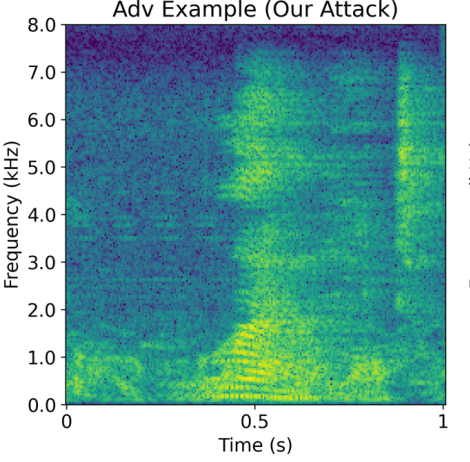

Recent Work
My primary research interests are in theoretical foundations and methods for unsupervised machine learning, particularly clustering and embedding.

Here are my slides from my advancement to candidacy in December 2024, which focused on clustering from a statistical perspective.
Previous Work
Prior to UCSD, I was a data scientist at Pacific Northwest National Laboratory where I broadly worked on deep learning problems with applications including computer vision, materials science, molecular property prediction, and radio frequency data.
Robust Deep Learning

Topologically and Geometrically Informed Approaches to Machine Learning

“Haldane Bundles: A Dataset for Learning to Predict the Chern Number of Line Bundles on the Torus”. C. Tipton, E. Coda, D. Brown, A. Bittner, J. Lee, G. Jorgenson, T. Emerson, and H. Kvinge. NeurIPS Workshop on Symmetry and Geometry in Neural Representations (2023).
[paper][code]“Fiber Bundle Morphisms as a Framework for Modeling Many-to-Many Maps”. E. Coda, N. Courts, C. Wight, L. Truong, W. Choi, C. Godfrey, T. Emerson, K. Kappagantula, and H. Kvinge. Proceedings of Topological, Algebraic, and Geometric Learning Workshops 2022 (2022).
[paper]
Applications

“Impacts of Data and Models on Unsupervised Pre-training for Molecular Property Prediction”. E. Coda, G. Panapitiya, and E. Saldanha. AI for Accelerated Materials Design-NeurIPS 2023 Workshop (2023).
[paper]“Evaluating uncertainty-based active learning for accelerating the generalization of molecular property prediction”. T. Yin, G. Panapitiya, E. Coda, and E. Saldanha. Journal of Cheminformatics (2023).
[paper][code]“Deep Learning for Spectral Filling in Radio Frequency Applications”. M. Setzler, E. Coda, J. Rounds, M. Vann, and M. Girard. 2022 Sensor Signal Processing for Defence Conference (2022).
[paper]“Differential Property Prediction: A Machine Learning Approach to Experimental Design in Advanced Manufacturing”. L. Truong, W. Choi, C. Wight, E. Coda, T. Emerson, K. Kappagantula, and H. Kvinge. AAAI 2022 Workshop on AI for Design and Manufacturing (2022).
[paper]“CHOSEN: A synthesis of hydrometeorological data from 30 intensively monitored watersheds across the US”. L. Zhang, E. Moges, J. Kirchner, E. Coda, T. Liu, A. Wymore, Z. Xu, L. Larsen. Hydrological Processes (2021).
[paper][code]